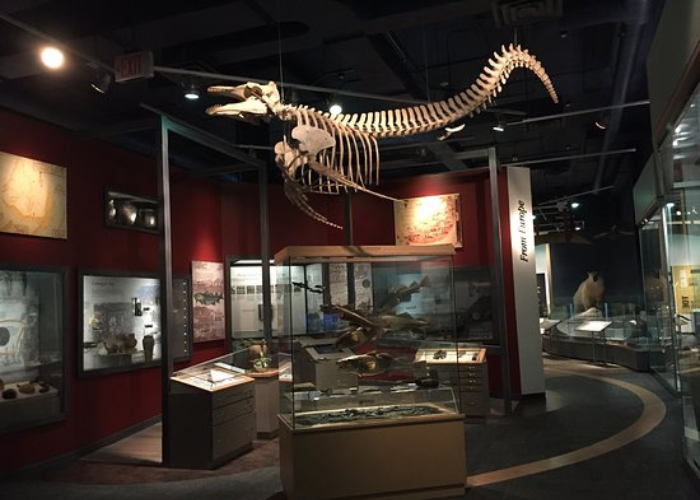
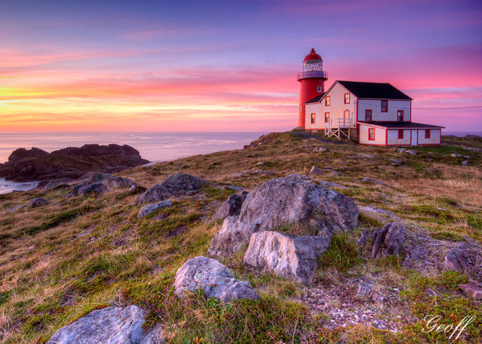
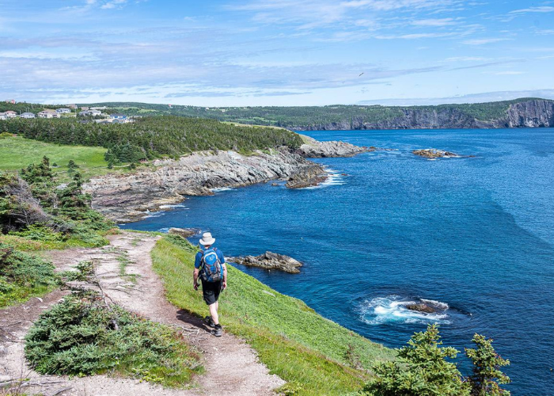
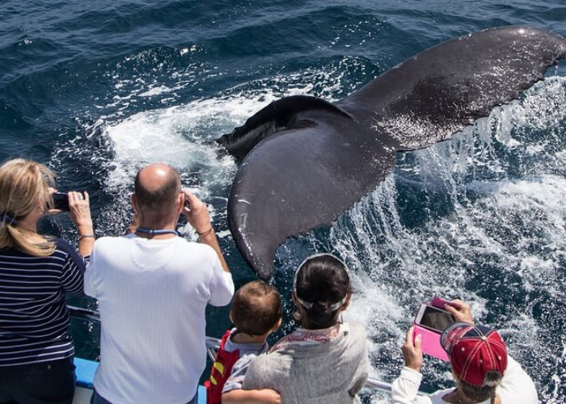

A guided tour of the region's best breweries and discover the art and science of craft brewing.
Our expert guides will take you behind the scenes of each brewery, where you'll learn about the brewing process, the history of craft brewing on the Avalon Peninsula, and the stories behind each beer.
Read more

Family Culture Package
An exciting family package for visitors to St. John's that includes visits to The Rooms and the Johnson Geo Centre, as well as a delicious picnic lunch to feed the family of 4.
This package is designed for families with 2 adults and 2 children who are 12 years old or younger.
Read more

Family Ferryland Adventure
An exciting family package for visitors to the Avalon Peninsula that includes a visit to the historic Colony of Avalon and a scenic Lighthouse Picnic in Ferryland, Newfoundland and Labrador.
This family package is to experience the history and natural beauty of the Avalon Peninsula, while enjoying a delicious picnic lunch.
Read more

Novice East Coast Hiking Experience
Experience the natural beauty of Newfoundland's rugged coastline with our family two-day hiking package.
Perfect for novice hikers, with a total distance of approximately 5 km! Must-visit places like Tors Cove, La Manche Village and enjoy the view of Atlantic Ocean!
Read more

Whale Watching/Cod Jigging
A scenic boat ride along the beautiful coastline of Conception Bay, where we'll have the chance to spot majestic whales breaching and blowing.
Be a Newfoundlander with hands-on cod jigging experience to catch your own fresh cod. Enjoy a delicious seafood feast, cooked to perfection by our chef.
Read more